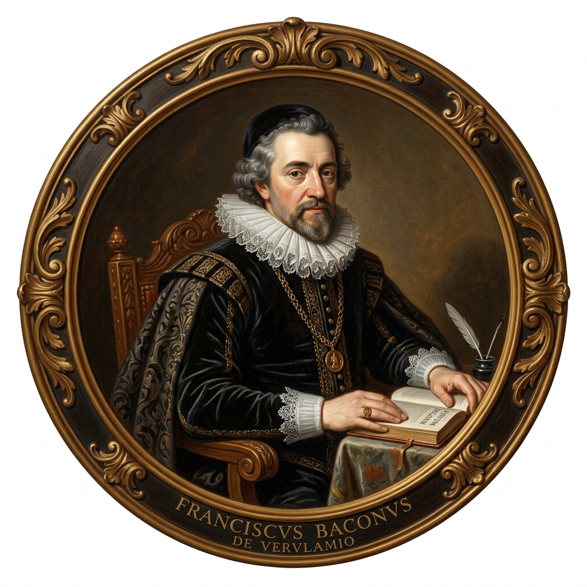
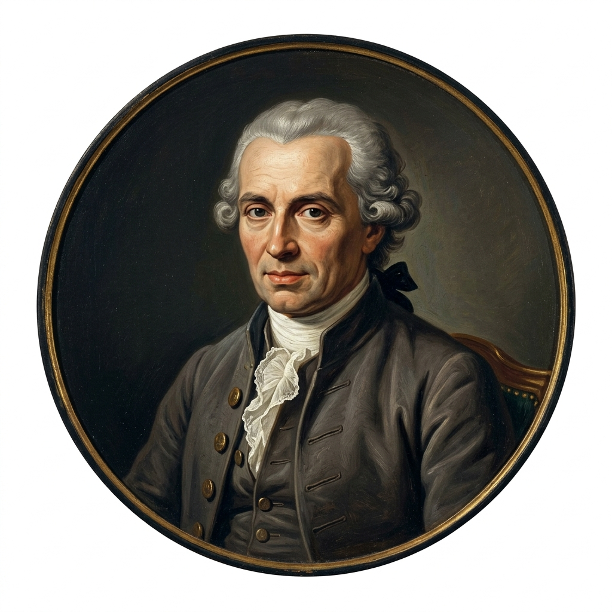
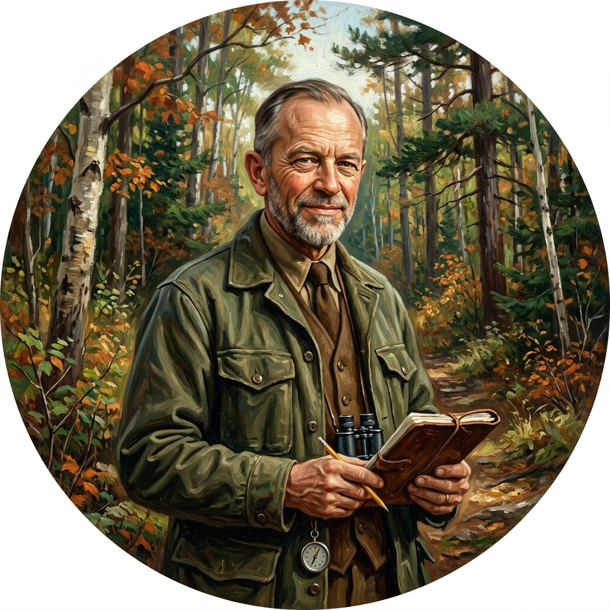
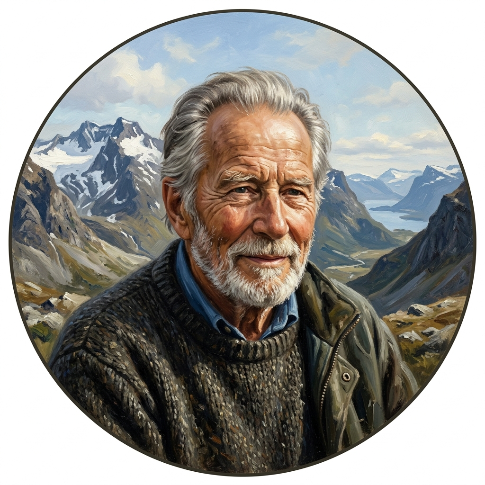

인간과 자연은 어떤 관계를 맺어야 할까?
지구 환경 위기 속에서 자연을 바라보는 인류의 두 가지 핵심적 패러다임을 대시보드를 통해 완성해봅시다.
📖 학습 안내 및 활동 방법
- 1단계 (개념 탐구): 상단의 탭 메뉴를 자유롭게 이동하며 인간 중심주의와 생태 중심주의 두 핵심 철학의 정의, 세계관, 그리고 사상가별 관점을 학습합니다.
- 2단계 (빈칸 매칭): 교재 본문의 중요 단어 빈칸을 하단의 단어 바구니 칩을 활용해 채워나갑니다. 알맞은 단어 칩을 클릭한 후 빈칸에 넣으면 정답 여부가 확인됩니다.
- 3단계 (종합 정리): '종합 비교표'에서 두 주의를 한눈에 대조 학습한 뒤, '나의 생각 정리' 탭에서 서술형 보고서 미션을 수행하고 배움 자가 진단 리스트를 점검합니다.
- 💡 사상가 입체 학습: 베이컨, 데카르트, 칸트, 레오폴드, 네스 등 본문에 등장하는 사상가들의 초상화 아바타를 클릭하면 상세 저서와 핵심 인용문을 팝업창으로 더 깊게 탐색할 수 있습니다.
인간 중심주의 (Anthropocentrism)
인간을 세계의 유일한 주체이자 가장 존엄한 존재로 규정합니다. 자연은 오직 인간의 풍요, 편의, 안전을 충족하기 위한 물질적 수단 및 개발의 대상이자 도구로서의 가치를 지닌다고 봅니다.
생태 중심주의 (Ecocentrism)
생태계 전체를 하나로 묶는 전일론적이고 유기적인 세계관에 기초합니다. 인간을 포함한 동물, 식물, 흙, 강 등 생태계의 모든 구성원들이 상호 연대하며 그 자체로 내재적 가치를 지닌다고 파악합니다.
🎯 오늘 우리는 무엇에 집중하며 배워야 할까?
학습 완료 후 '나의 생각 정리' 탭의 자가 진단을 통해 스스로 달성도를 확인해 보세요.👤 인간 중심주의
- 의미(핵심 주장)와 이분법적·기계론적 세계관
- 대표 사상가(베이컨, 데카르트, 칸트)의 핵심 논리
- 인간 중심주의 개발이 초래한 한계점(환경 위기)
🌲 생태 중심주의
- 의미(핵심 주장)와 전일론적·유기체적 세계관
- 대표 사상가(레오폴드, 네스)의 핵심 논리
- 생태 중심주의의 한계점(환경 파시즘의 우려)
🤝 바람직한 관계
- 인간과 자연의 조화와 공존을 위한 환경 의식 및 태도
- 구체적인 실천 사례 (생태통로, 친환경 생태 도시 등)
🔑 확장 윤리 & 전통 사상
- 동물 중심주의(싱어)와 생명 중심주의(슈바이처, 테일러) 키워드
- 동양 사상(유교: 천인합일/인, 불교: 연기설/자비, 도가: 무위자연)
👤 인간 중심주의: 인간의 가치 최우선과 자연 지배관
정의와 세계관 개념
인간과 자연의 관계에서 인간을 가장 가치 있는 존재로 여기고, 인간의 이나 행복을 최우선으로 고려하는 관점.
인간을 자연으로부터 독립되고 우월한 존재로 파악하는 세계관을 바탕으로 함.
의의와 한계 결과
무분별한 자연 개발을 통해 풍요로운 문명을 건설하고 인간의 삶의 질을 비약적으로 향상시킴.
지나친 착취로 인해 자원 고갈, 생태계 파괴, 그리고 21세기 인류를 위협하는 위기를 초래함.
인간 중심주의의 3대 핵심 특징 특징
[ 가치 ]
자연은 그 자체로 가치 있는 것이 아니라, 인간의 생존과 복지를 위한 수단에 불과하다고 봄.
도덕적 고려의 제한
도덕적 고려의 대상을 오직 ''으로 한정함.
자연 지배관
자연을 정복과 개발의 대상으로 파악하여 기술 발전을 통한 물질적 풍요를 지향함.
근대 사상가들의 시선 인물 매칭 💡 사진 클릭 시 상세 내용이 열립니다.

베이컨
칸트📰 관련 뉴스 탐구
[이슈 논쟁] ‘돼지 빌딩’ 도입 논란 🔗
중국의 초대형 다층식 양돈시설(일명 '돼지 빌딩') 도입을 둘러싸고, 공간 효율성과 농가 인력 부족 해소, 식량 주권 확보 등 인간 중심적 효율성 및 농업 경쟁력을 앞세운 찬성 입장과 동물 복지 저하, 밀집 사육으로 인한 전염병 및 환경오염 피해를 우려하는 생태적 반대 입장이 갈등을 빚고 있습니다.
🌲 생태 중심주의: 전일론적 세계관과 생태계 전체 배려
정의와 세계관 개념
인간을 포함한 자연 전체를 하나로 보며, 모든 구성원이 유기적으로 연결되어 있다는 관점을 강조함.
자연은 인간의 이익과 무관하게 그 자체로 가치를 지닌다는 가치를 인정함.
의의와 한계 결과
상호 의존성에 기초한 생태계 전체 관심을 강조하고, 인간의 생태계 의무를 각성시켜 환경 위기 극복에 기여함.
모든 개발의 중단 요구 등 비현실적인 주장이 되거나, 전체를 위해 개별 생명을 희생하는 의 위험이 있음.
생태 사상가 탐구 및 원전 심화 💡 사진 클릭 시 상세 내용이 열립니다.

레오폴드 (A. Leopold)
아르네 네스 (A. Naess)생태 중심주의의 3대 핵심 특징 특징
도덕적 범위의 확장
인간뿐만 아니라 동물, 식물, 나아가 무생물을 포함한 전체를 도덕적 고려 대상으로 삼음.
상호 의존성
인간은 대지의 정복자가 아니라 생명 공동체의 평범한 이자 협력자임.
심층적 실천
단순한 오염 방지를 넘어 인간의 과 생활 양식 자체를 생태 중심으로 근본적으로 전환하고자 함.
📰 관련 뉴스 탐구
"지리산 파괴하는 산악열차·케이블카 반대" 중단 촉구 🔗
지리산 산악열차 및 케이블카 개발 사업으로 인한 서식지 분절, 산림 훼손 등 생태계 전체의 온전성과 생물 다양성 파괴를 우려한 시민·환경단체들의 개발 중단 촉구 사례입니다. 자연의 본원적 가치와 생명 연대의 안정성을 중시하는 생태 중심주의적 보전 입장이 뚜렷하게 투영된 현실적 갈등 사안입니다.
📊 스스로 완성하는 두 관점 종합 비교표
| 구분 | 인간 중심주의 | 생태 중심주의 |
|---|---|---|
| 세계관 | 세계관 | 전일론적 세계관 |
| 가치 평가 | 도구적 가치 | 가치 |
| 도덕적 고려 범위 | 한정 | 생태계 전체 |
| 대표 사상가 | , 데카르트, 칸트 | , 네스 |
| 긍정적 의의 | 문명 건설 및 인간 삶의 질 향상 | 생태계 전체에 대한 관심 환기 및 생태계 의무 일깨움 |
| 주요 한계점 | 자원의 지나친 착취로 인한 환경 파괴 및 생태적 환경 위기 초래 | 모든 개발의 전면 중단 요구 등 비현실적 주장 및 파시즘의 위험성 (개인의 희생 강요) |
☘️ 동물 중심주의와 생명 중심주의 참고
🐾 동물 중심주의
도덕적 고려의 범위를 인간을 넘어 까지 확대하는 관점.
• 싱어 (P. Singer): 쾌고 감수 능력을 지닌 동물도 이익 평등 고려의 원칙에 따라 도덕적으로 대우해야 함을 주장 (『동물 해방』).
🌱 생명 중심주의
도덕적 고려의 대상을 동물뿐만 아니라 모든 로 확대하는 관점.
• 슈바이처 (A. Schweitzer): 모든 생명은 살아가고자 하는 생명 의지를 지니고 있으므로, 생명에 대해 외경심을 가져야 함을 강조 (『나의 생애와 사상』).
🤝 인간과 자연은 어떤 관계이어야 할까?
인간 중심주의와 생태 중심주의의 조화를 통해 지속가능한 삶을 추구하는 방법을 탐색해봅시다.
인간과 자연의 바람직한 관계 개념
인간과 자연은 서로 대립하거나 한쪽을 파괴하지 않고 롭게 공존해야 함.
자연 생태계의 자생력을 해치지 않고 장기적으로 모두가 함께 살아갈 수 있도록 조화로운 을 이루어야 함 (예: 기적의 사과 농법).
공존을 위한 실천적 태도 노력
인간이 자연보다 우월하다는 정복적 사고방식에서 탈피하여, 자연 공동체의 일원으로서 책임감을 가지는 을 정립해야 함.
미래 세대의 생존과 동식물을 포함한 생태계 전체의 보전까지 함께 고려하는 인 삶의 태도가 요구됨.
공생을 위한 실천 사례 실천
[ ]
인간의 복지와 경제 활동을 유지하되, 생태계 보전과 조화를 이루어 미래 세대의 삶을 파괴하지 않는 개발과 보존의 노력.
[ ]
개발 과정에서 자연 파괴를 최소화하는 도시 형태.
• 브라질 쿠리치바: 대중교통 중심 개편, 녹색 교환 제도
• 독일 프라이부르크: 재생 에너지 적극 활용, 친환경 보행 교통 체계
[ ]
지역이 원래 가지고 있던 자연환경과 고유한 문화를 지키면서, 지역 주민이 주체가 되는 지역 문화 및 지역 경제 살리기 운동.
☯️ 동양의 전통 자연관 참고
📜 유교 (Confucianism)
하늘의 도를 본받아 만물의 본래적 가치를 존중하며, 인간과 자연이 조화를 이루는 의 경지를 지향하고, 사랑의 정신인 을 모든 존재에 베풀고자 함.
☸️ 불교 (Buddhism)
우주 만물이 독립적으로 존재하는 것이 아니라 서로 밀접하게 원인과 조건으로 연결되어 있다는 에 기초함. 만물의 상호 의존성을 깨달아 모든 생명에 를 베풀 것을 강조함.
☯️ 도가 (Taoism)
인위적인 가식이나 욕구에서 벗어나 자연 그대로의 상태를 따르는 을 추구함. 인간은 자연의 일부이므로 자연의 섭리에 순응하고 조화를 이루어야 한다고 봄.
☘️ 더 알아보기: 인간과 자연의 조화를 강조하는 전통 풍수 사상
풍수 사상은 우리 조상들이 주거지와 묘지 등 생활 터전의 위치를 정할 때 활용했던 전통적 지리 사상입니다. 현대적 의미에서 풍수 사상은 단순히 개인의 복을 빌기 위한 술수가 아니라, 자연을 살아 있는 하나의 로 보고, 개발에 취약한 자연환경을 보호하고 관리하고자 했던 조상들의 전통적 환경 사상으로 재평가될 수 있습니다.
📰 관련 뉴스 탐구
담비·삵 오가는 안전한 길 열리자 오대산 로드킬 87% 급감 🔗
국립공원 내에 야생동물의 이동 경로를 이어주는 생태통로(터널형·육교형)를 구축하여, 로드킬(찻길 사고)을 비약적으로 줄이고 생태계의 단절을 보완한 실제 상생 사례입니다. 인간 편의적 도로 개발과 자연 생태계 보전이 서로 대립하지 않고, 기술과 투자를 통해 조화와 공존(바람직한 관계)을 직접 이끌어낼 수 있음을 보여주는 대표적인 실천 모델입니다.
✍️ Today's Mission: 나의 생각 정리하기
인간과 자연의 관계에 대해 '인간이 우선'이라는 입장을 취하는 인간 중심주의의 핵심 주장, 세계관(기계론적·이분법적 자연관)을 설명하고, 대표 사상가들(베이컨, 데카르트, 칸트 등)이 제시하는 논리를 비교·정리해봅시다.
'생태계 전체의 균형과 안정성'을 추구하는 생태 중심주의의 핵심 주장, 전일론적 가치관을 설명하고, 대표 사상가(레오폴드, 네스 등)의 입장과 발생할 수 있는 한계점을 서술해봅시다.
인간 중심주의와 생태 중심주의 외에도 도덕적 고려 대상을 확장한 동물 중심주의와 생명(생물) 중심주의의 핵심 주장을 비교하여 설명해봅시다.
인간과 자연의 바람직한 관계(조화와 공존)를 형성하기 위해 우리에게 요구되는 환경 의식(동양의 전통 자연관 포함) 및 태도와 이를 보여주는 구체적인 실천 사례를 서술해봅시다.
스스로 배움 확인하기 자가 진단
Q1다음을 주장한 사상가의 입장에 대한 옳은 설명만을 <보기>에서 고른 것은?
ㄱ. 인간만이 본래적 가치를 가진 존재라고 본다.
ㄴ. 인간과 자연을 전일론적 관점에서 바라본다.
ㄷ. 인간과 생태계는 상호 존중해야 한다고 본다.
ㄹ. 인간과 자연은 모두 존속할 권리를 가진다고 본다.
Q2다음을 주장한 사상가의 입장으로 옳은 것은?
Q3A, B의 입장 모두가 질문에 옳게 대답한 것은? (단, A는 인간 중심주의, B는 생태 중심주의임)
| 질문 | 대답 | ||
|---|---|---|---|
| A (인간 중심주의) |
B (생태 중심주의) |
||
| ① | 인간과 달리 자연은 직접적인 도덕적 고려의 대상인가? | 아니요 | 예 |
| ② | 인간 이외의 존재는 모두 인간의 목적을 위한 수단인가? | 아니요 | 예 |
| ③ | 인간을 위해 자연을 이용하는 것은 정당화될 수 있는가? | 아니요 | 아니요 |
| ④ | 인간은 다른 존재와 마찬가지로 자연의 평범한 구성원인가? | 아니요 | 예 |
| ⑤ | 인간은 자연과 함께 조화와 균형을 유지하며 살아야 하는가? | 예 | 예 |
Q4그림의 강연자의 입장으로 적절한 것만을 <보기>에서 고른 것은?
ㄱ. 비이성적 존재를 목적으로 대우해야 한다.
ㄴ. 자연 파괴는 인간에 대한 의무에 위배된다.
ㄷ. 인간 이외의 존재는 어떠한 가치도 갖지 않는다.
ㄹ. 그 자체로서 가치를 지닌 존재는 도덕적 고려 대상이다.
Q5갑의 입장에서 <문제 상황> 속 A국에 제시할 조언으로 가장 적절한 것은?
A국은 심해 채굴의 허용 여부를 결정하는 국제회의에 참석할 예정이다. A국은 전기 자동차나 스마트폰 배터리 제조에 필요한 핵심 광물을 얻기 위해 심해 채굴을 찬성해야 할지, 해양 생태계 훼손을 막기 위해 반대해야 할지 고민하고 있다.
Q6갑, 을의 입장에 대한 설명으로 옳지 않은 것은?
갑: 자연은 그 자체로 가치를 지니기 때문에 인간은 자연을 파괴할 권리가 없습니다. △△산 케이블카 설치로 인해 경제적 이익은 얻을 수 있을 것입니다. 그러나 장기적인 관점에서 보면 관광객의 증가로 멸종 위기 야생 생물의 서식지가 훼손될 것이 분명합니다.
을: △△산 케이블카 설치로 인해 자연환경 훼손의 우려가 있다는 것은 인정합니다. 하지만 장기적으로 보면 관광객의 증가로 고용 창출 및 지역 경제 활성화에 큰 도움이 될 것입니다. 무엇보다 자연은 인간을 위해 사용될 때 존재 가치가 있습니다.
Q7다음 글의 관점에 부합하는 진술에만 모두 '✓'를 표시한 학생은?
| 진술 | 학생 | ||||
|---|---|---|---|---|---|
| 갑 | 을 | 병 | 정 | 무 | |
| 생태계 전체는 하나의 유기체이다. | ✓ | ✓ | ✓ | ||
| 인간과 자연은 동등하지 않으며 위계 관계에 있다. | ✓ | ✓ | ✓ | ||
| 인간은 자연과 조화를 이루며 더불어 살아가는 존재이다. | ✓ | ✓ | ✓ | ||
| 자연은 있는 그대로가 아닌 인간을 위한 도구적 가치만을 지닌다. | ✓ | ✓ | ✓ | ||
Q8다음은 갑, 을의 가상 대화이다. 갑, 을의 입장으로 가장 적절한 것은? (단, 갑, 을의 입장은 각각 인간 중심주의, 생태 중심주의 중 하나이다.)
Q9갑, 을의 입장에서 <문제 상황> 속 A에게 제시할 적절한 조언만을 <보기>에서 고른 것은?
○○군 군수인 A는 관광객 유치를 위해 ○○군 내 위치한 △△산에 케이블카를 설치하자는 지역 주민들의 요구와 환경보호를 위해 케이블카 설치를 반대하는 시민 단체의 주장 사이에서 어느 쪽의 의견을 수용할지 고민하고 있다.
ㄱ. 갑: 자연의 도구적 가치보다 본래적 가치를 중시하세요.
ㄴ. 갑: 케이블카 설치로 기대되는 경제적 이득을 따져보세요.
ㄷ. 을: 인간은 자연을 지배할 수 있는 권리가 있음을 명심하세요.
ㄹ. 을: 케이블카 설치가 생태계에 미칠 부정적 영향을 고려하세요.
Q10인간 중심주의 입장에 대해 생태 중심주의 입장에서 제기할 수 있는 비판을 서술하시오.
인간 중심주의를 과도하게 적용했을 때 나타날 수 있는 기후변화, 자원고갈 등 환경 위기의 한계점 측면에서 한 문장으로 서술해 보세요.
Q11(가), (나) 사상 모두 부정의 대답을 할 질문으로 옳은 것은?
(가) 하늘을 아버지라 하고 땅을 어머니라고 부르는데, 나는 조그만 몸으로 이 가운데 홀연히 일체가 되어 존재한다. 그러므로 하늘과 땅에 가득 차 있는 형상은 나의 몸이요, 하늘과 땅을 거느리는 모든 원리는 나의 마음이다. 모든 사람은 나의 동포요, 모든 사물은 나의 동료이다.
(나) 온갖 모든 중생이 다 나의 아버지요 어머니거늘, 그들을 잡아서 먹거나 해치는 것은 곧 나의 부모를 죽이거나 해치는 것이며 또한 나의 옛 몸을 먹는 것이다. 모든 땅과 물은 다 나의 옛 몸이고, 모든 온기와 존재는 다 나의 본래 몸이다.
Q12밑줄 친 ㉠에서 강조하는 자연관에 대한 입장으로 가장 적절한 것은?
Q13(가)에 들어갈 탐구 주제로 가장 적절한 것은?
🌳 <사례 1> 독일 프라이부르크
- 태양 에너지 및 수력 발전을 통한 에너지 효율 추구
- 자전거 중심의 교통 체계 운영
- 쓰레기 재활용을 통한 절약의 생활화
- 도시 면적의 40%에 이르는 숲 조성
🚌 <사례 2> 브라질 쿠리치바
- 버스 전용 차선 및 보행자 도로 우선 확보
- 굴절 버스 및 원통형 정류장 도입을 통한 시민 편의 확대
- 70%에 달하는 쓰레기 재활용률
- 슬럼가 및 유휴지를 녹지 공원으로 조성
🔑 해설 및 정답 피드백
💡 문항 해설
이곳에 문제의 상세 해설이 출력됩니다.
🚫 오답 피하기
- 오답 보기에 대한 설명이 이곳에 출력됩니다.
🏆 학습 평가 결과
인간 중심주의와 생태 중심주의 퀴즈를 모두 완료했습니다!